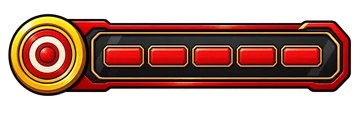
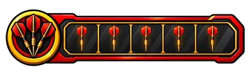
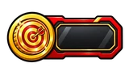
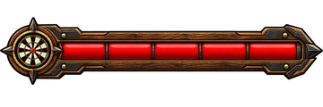
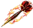
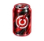

Spielerklärung
Ziel
Laufe durch das Level bis zum Endboss und besiege ihn. Danach ist das nächste Level freigeschaltet.
Steuerung
| Aktion | Tastatur | Touch |
|---|---|---|
| Laufen | A / D oder Pfeil links / rechts | Pfeil-Buttons links unten |
| Springen | W oder Pfeil hoch | Button Springen |
| Ducken | S oder Pfeil runter | Button Ducken |
| Dart werfen | Leertaste oder F | Button Werfen |
| Wurf aufladen | Shift oder Alt (einmal drücken) | Button Aufladen |
| Weiter / Neustart | Enter | Auf das Spielfeld tippen |
Anzeigen
 |
Leben: Du hast 5 Leben. Jeder Treffer kostet eins, danach bist du kurz unverwundbar. Bei 0 ist das Spiel verloren. |
 |
Darts: Gesammelte Pfeile, höchstens 5. Normale Würfe verbrauchen keine. Bei vollem Vorrat kannst du den Wurf aufladen, die Leiste leuchtet dann. |
 |
Münzen: Anzahl der gesammelten Münzen. |
 |
Boss-Leben: Erscheint oben in der Mitte, sobald du den Endboss erreichst. |
Einsammeln
| Münze: Zählt auf deinen Münzzähler. | |
 |
Dart: Füllt deinen Vorrat um 1 auf. Ist er voll (5), bleibt der Dart liegen. |
 |
Energydrink: Gibt ein Leben zurück. Hast du volles Leben, bleibt er liegen. |
Gegner
Dartscheiben rollen am Boden auf dich zu, fliegende Pfeile kommen in der Luft. Du besiegst sie mit einem Dart oder indem du im Fallen von oben auf sie springst (du springst dabei wieder ab). Berührst du sie anders, verlierst du ein Leben.
Endboss
Am Ende des Levels wartet ein Endboss und wirft Gegenstände nach dir. Er hält viel aus: Ein normaler Dart macht 1 Schaden, ein aufgeladener Wurf macht 2 und verbraucht alle Darts. Nach einem Treffer ist der Boss kurz unverwundbar.
Mit wenig Leben wird der Boss wütend. Er wirft dann schneller und schleudert mehrere Gegenstände nacheinander. Beim letzten Boss steigert sich das in zwei Stufen, zuletzt sind es drei Gegenstände auf einmal.